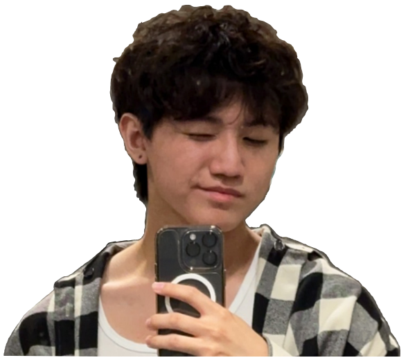

CHARLIE LIN
2nd year CS Major
Lagrange, GA
One of my biggest passions involve volunterring!
Back in high school, I was a part of all the volunteer organizations my school offered, where I actively participated in numerous blood drives, homelessness aid efforts, and environmentalism.
Presently, I'm attempting to participte in more volunteer opportunites whether it be in campus events or off-campus organizations.